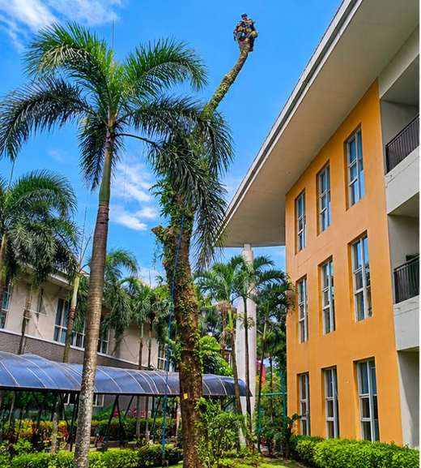
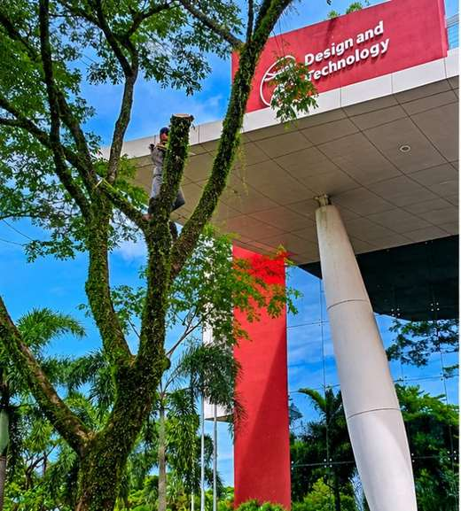
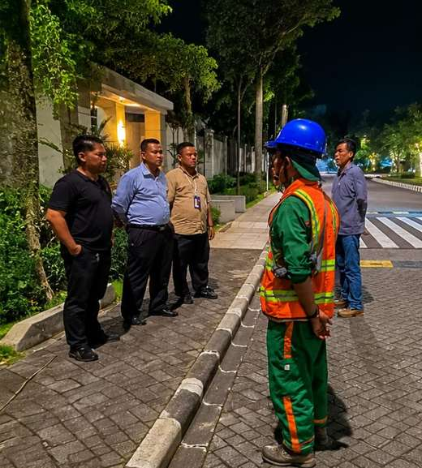

01 / TEBANG
Jasa Tebang Pohon
Penanganan pohon yang perlu ditebang dengan mempertimbangkan ruang kerja dan kondisi sekitarnya.

Nandar Flora melayani penebangan pohon besar maupun kecil, pemangkasan ranting, dan perapian pohon untuk rumah, kantor, maupun lahan. Harga kompetitif, pengerjaan rapi, dan siap survei lokasi.
Nandar Flora adalah penyedia jasa tebang pohon dan pemangkasan pohon yang melayani kebutuhan pekerjaan dalam skala kecil maupun besar. Kami membantu menangani pohon yang sudah terlalu tinggi, ranting yang menjulur ke bangunan, atau cabang yang mengganggu area sekitar.
Setiap pekerjaan diawali dengan memahami kondisi pohon, akses lokasi, dan lingkungan sekitarnya. Dari sana, kami menyusun ruang lingkup serta penawaran harga yang sesuai dengan kebutuhan lapangan.
Kami mengutamakan pengerjaan yang rapi dan pembersihan area setelah pekerjaan sesuai kesepakatan.
Mulai dari satu pohon di rumah hingga pekerjaan dalam jumlah banyak untuk kantor, perumahan, dan lahan. Jenis pekerjaan, tingkat kesulitan, serta kondisi lokasi dibahas terlebih dahulu agar penawaran sesuai kebutuhan.
Penanganan pohon yang perlu ditebang dengan mempertimbangkan ruang kerja dan kondisi sekitarnya.
Pemangkasan cabang yang terlalu rimbun, mengganggu akses, atau perlu ditangani.
Penanganan dan pemindahan pohon tumbang sesuai kondisi serta akses lokasi.
Pembersihan sisa ranting dan material pohon setelah pekerjaan sesuai kesepakatan.
Pengumpulan informasi kondisi pohon, akses, dan lingkungan untuk menyusun estimasi pekerjaan.
Diskusikan kebutuhan penanganan pohon dan informasi awal yang perlu disiapkan.
Dokumentasi kegiatan penanganan pohon dan koordinasi di lapangan.





Informasi awal yang lengkap membantu proses penilaian kebutuhan pekerjaan.
Jelaskan jenis pekerjaan dan area lokasi.
Sertakan foto pohon dari beberapa sudut jika memungkinkan.
Kondisi dan ruang lingkup pekerjaan ditinjau untuk penyusunan estimasi.
Detail pekerjaan disepakati sebelum pelaksanaan.
Kami memahami bahwa setiap pekerjaan pohon memiliki kebutuhan dan tingkat kesulitan yang berbeda.
Menangani kebutuhan penebangan dan pemangkasan pohon untuk berbagai kondisi lokasi.
Penawaran disesuaikan dengan ukuran pohon, tingkat kesulitan, akses, dan ruang lingkup pekerjaan.
Kami mengutamakan kerapian pengerjaan serta pembersihan sisa ranting dan material sesuai kesepakatan.
Melayani kebutuhan satu pohon maupun pekerjaan dalam jumlah banyak.
Peninjauan membantu memahami kondisi lapangan dan menyusun estimasi biaya yang lebih tepat.
Melayani Jakarta, Tangerang Selatan, dan wilayah Jabodetabek sekitarnya sesuai jangkauan dan jadwal.
Kami melayani Jakarta Barat, Jakarta Timur, Jakarta Utara, Jakarta Pusat, dan Jakarta Selatan. Area Tangerang Selatan meliputi BSD, Bintaro, Ciputat, Serpong, Pamulang, dan sekitarnya. Kami juga melayani wilayah Jabodetabek pada umumnya. Hubungi kami untuk memastikan jangkauan dan jadwal survei di lokasi Anda.
Gunakan peta berikut untuk melihat titik Nandar Flora dan membuka petunjuk arah melalui Google Maps.
Jl. H. Sarmah No. 34, RT 04/RW 02, Parigi, Kecamatan Pondok Aren, Kota Tangerang Selatan, Banten 15227.
Fokus layanan saat ini adalah wilayah Jabodetabek.
Siapkan alamat atau titik lokasi, jenis pekerjaan, serta foto pohon dan area sekitarnya jika memungkinkan.
Foto dapat membantu penilaian awal. Estimasi akhir bergantung pada kondisi pohon, akses, risiko sekitar, dan ruang lingkup pekerjaan.
Ceritakan kebutuhan Anda, kirimkan foto pohon dan lokasi, lalu diskusikan jadwal survei serta penawaran harga. Nandar Flora siap membantu pekerjaan kecil maupun besar di area layanan Jabodetabek.
WhatsApp: +62 819-0802-9133
CHAT VIA WHATSAPP